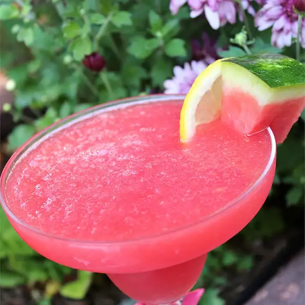

Watermelon Lemonade Slush

Description
Whenever I have excess seasonal fruit, I freeze it in chunks for fast and easy slushes and smoothies.
Here's a delicious way to use up some watermelon.
Ingredients
- 1 cup cubed seeded watermelon
- 1 cups water
- 3 tablespoons sweetened strawberry lemonade drink mix
Steps
- Place the watermelon pieces onto a plastic-wrapped baking sheet,
and freeze until solid, about 45 minutes.
- Place the frozen watermelon, water, and strawberry lemonade drink mix in a blender; blend until slushy.